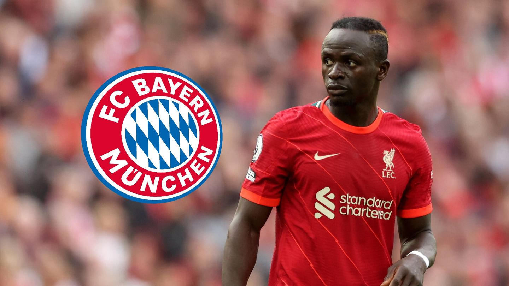

Լիվերպուլի հարձակվող Սադիո Մանեն հեռանում է ակումբից։
Լիվերպուլի հարձակվող Սադիո Մանեն հեռանում է ակումբից։ Նրան հարցրել են դրա մասին և Սադիոն պատասխանել է, որ "Սենեգալի 70 տոկոսը ցանկանում է, որ ես հեռանամ ուրեմն ես այդպես էլ կանեմ"։ Բավարիան Մանեի հետ արդեն պայմանավորվել է,եթե Մանեն գնա Բավարիա Մյունխեն, ապա կստանա 20 միլիոն Եվրո մեկ տարում։
Այս սեզոնում ֆուտբոլիստը խաղացել է 51 խաղ խփել է 22 գոլ և տվել է 5 ասսիստ: